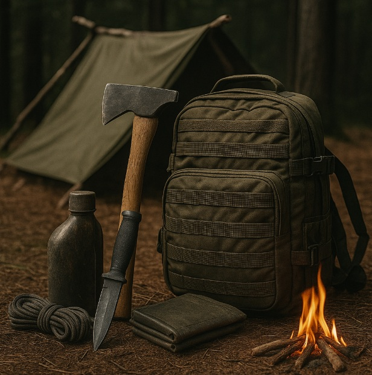

Building a Shelter from Natural Materials
Objective
Get out of wind and precipitation quickly, staying warm with minimal tools.
Site Selection
- Choose high, drained ground; avoid gullies and dead branches overhead.
- Use natural windbreaks (boulders, dense brush). Confirm drainage direction.
Fast Rigs
A-Frame Tarp
- Ridgeline chest height between trees.
- Stake corners; add two mid-panel guylines.
- Lower windward side to knee height for storms.
Lean-To + Reflector
- Stake one long edge; raise the other with poles/cord.
- Build a waist-high log reflector 3–4 ft away; place fire between.
Debris Hut (No Tarp)
- Ridgepole from forked branch; stack ribs; cover with 18–24 in. of leaves/needles.
- Thick leaf litter inside for insulation; small entrance to reduce drafts.
Insulation & Ground Work
- At least 4–6 in. of dry material between you and ground.
- Vent a small gap up top to reduce condensation.
Common Errors
- Pitching in low spots (floods your bed).
- Too little debris—thin walls leak heat.
- Open ends facing prevailing wind.
20-Minute Drill
Set an A-frame and convert to a low storm pitch without moving the ridgeline. Practice until you can do it in the dark.
← Previous | All Articles | Next →